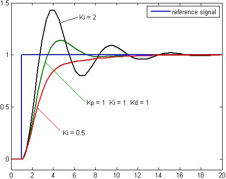

空中机器人课程笔记
近期要入职一个做机器人的组, 但我之前完全没有接触过 EE 相关内容. 于是就在网上找到了宾夕法尼亚的 Robotics Specialization 系列课程希望可以快速入门一下. 可能是因为我基础太差, 感觉第一部分 Robotics: Aerial Robotics 讲的非常乱非常粗糙, 就做了份笔记方便梳理.
对于上课略过的知识, 笔记结合了 台大机器人学之运动学 中的内容作为基础补充方便理解
课程结构
- 课程先介绍了空中无人机中最简单的四旋翼无人机.
- 在四旋翼无人机的基础上介绍了电机的基本原理, 力矩, 旋转等基本力学原理.
- 基于这些力学知识, 课程介绍了如何在一维层面分别控制机器水平与垂直运动并完成误差修正.
- 之后, 课程介绍了刚体位移的知识, 这部分讲的有些粗糙, 我结合 台大机器人学之运动学 给出了部分内容的基础解释
- 在刚体位移的基础上课程介绍了路径规划相关的知识
微型无人机
微型无人机 (Micro Air Vehicles) 类型:
- 固定翼飞行器 (Fixed wing): 无法悬停.
- 扑翼飞行器 (Flapping wing): 模仿鸟类飞行, 可以悬停, 需要完成复杂的流体力学建模
- 旋翼飞行器 (Rotor craft)
四旋翼无人机
四旋翼无人机 (Quadrotors craft)
从四个方面学习一个机器人系统:
- 状态估计 (State Estimation): 位置估计, 方向与速度估计
- 控制指令 (Control Command)
- 环境绘制 (Mapping): 建立周边环境地图
- 轨迹规划 (Planning)
特点
易于控制: 翼短小粗壮, 不易折断, 结构简单易于控制
对向翼同向旋转, 相邻翼反向旋转
基本力学原理
旋翼的阻力矩: \(M = k_M\omega^2\)
- 流体中阻力与速度 \(f \sim v^2\)
- 旋转部件 \(v \sim \omega r\)
- 流体中旋转部件阻力 \(f \sim (\omega r)^2\)
- \(r\) 为固定值时流体中旋转部件阻力矩: \(M = fr \sim \omega^2 r^3 \sim k_M\omega^2\)
旋翼产生的推力推力: \(F = k_F\omega^2\)
电机的特性
- 产生力矩 \(\tau \sim I\)
- 旋转速度 \(\omega \sim U\)
- 当功率一定时 \(\tau \sim 1/\omega\)
让四旋翼无人机悬停的条件:
- 合力为 \(0\): \(mg/4 = k_F\omega_0\)
- 此时阻力矩: \(M_0 = k_M\omega_0^2\)
- 此时电机动力矩应该等于阻力矩 \(\tau_0 = M_0\)
- 当 \(\tau_0, \omega_0\) 确定, 我们只需要调整电流, 修正功率即可保持合力为 \(0\) (图中假设电机曲线表明 \(\tau\sim1/w\), 这是在功率恒定的情况下, 无人机可以调整电流电压以改变曲线)
这里很容易犯的一个错误是类比在线性运动平衡条件为 \(阻力=动力\) 想当然的认为电机产生推力应该克服重力与阻力: \(F = f + mg\). 这里我混淆了: \(F\) 是电机产生的推力, 不是电机转动的转动力. 推力是与重力平行的, 转动力与阻力平行. 推力是电机转动力克服阻力转动从而向外表现产生的推力. 不能让推力再和阻力对抗. 推力应该在与重力对抗. 那么如何产生持续稳定的推力呢? 需要让转动力和阻力平衡, 也就是让他们力矩相同, 即要求电机自主调整从而使在 \(\omega_0\) 下 \(M_0=\tau_0\)
角加速度: \(\alpha = \frac{\tau}{I}\) (力矩 / 转动惯量)
转动惯量 \(I\) 可以通过计算或者测量得到 (大物学过)
四旋翼无人机的一维控制
宏观控制
控制翻滚 (Roll & Pitch): 左右提供不同的升力即可
控制水平移动 (Translation): 飞机只能提供垂直飞机向上的力, 实现水平移动需要先翻转一定角度, 然后提供更大的升力实现垂直方向分力抵消重力, 水平方向提供动力. 当需要停止时反方向反转以减速

一维垂直运动模型
垂直控制方向方程: \(\Sigma_{i=1}^4k_F\omega_i^2 + mg = ma\)
运动误差处理
我们知道 \(a = \frac{d^2x}{dt^2}\), 如果将 t 时刻的加速度作为机器的输入项 \(a = u(t)\), 我们可以求得理想情况下的位置 \(x_{des}(t)\). (大概就是 \(x_{des}(t) = \int v\ dt +C_1 = \int(\int u\ dt + C_2)\ dt+C_1\)) 据此我们可以定义理想与实际的误差 \(e_t = x_{des}(t) - x(t)\)
控制目标: 随着时间增长 \(e(t)\) 以指数形式衰减到 0
解决方法: 我们使用类似 PD 控制器的形式 (\(e''+K_ve'+K_pe=0\)) 计算出在 t 时刻下已知 \(e, e'\) 时候指数逼近模式的理想 \(e''\), 然后从加速度层面纠正 \(u(t) = x_{desc}''(t) + K_ve'+K_pe\) (我们也可以直接采用 PID 控制器的形式 \(u(t) = x_{desc}''(t) + K_ve'+K_pe + K_i\int_0^te(\tau)d\tau\)).
PID 控制器
感性的讲, 我们希望通过某些方法让误差以我们希望的方式趋于特定值. 趋于的方法有很多种, 例如:

有的是直接达到结果, 有的是上下穿梭, 有的是指数逼近, 我们可以通过 PID 计算出应该下一步加速度为多少时可以按照预期逼近, 使用三个 \(K\) 就可以控制逼近的模式
我们将误差纠正分为三个部分:
- 比例控制 (\(K_p\)): 误差为 \(e\) 时候修正 \(K_p e\). 例如我希望从 \(e=1\) 逼近到 \(e=0\). 取 \(K_p = 0.5\), 那么 \(e_0=1, e_1=0.5, e_2=0.25, e_3=0.125 \dots\)
- 积分控制 (\(K_i\)): 如果模型存在稳态误差 (比如无人机每秒钟被风吹偏一定距离, 水池在每次比例控制加水后都会漏水) 比例控制将永远无法达到目标值, 我们需要在修正时加入 \(K_i\int e\) 的修正量 (例如我们发现上面的例子在修正后每次都会 \(+0.1\) 即 \(e_0=1, e_1=0.5+0.1=0.6, e_2=0.3+0.1=0.4, e_3=0.2+0.1=0.3, e_4=0.15+0.1=0.25 \dots\)) 我们可以加入微分控制. 要求 \(K_i=0.1\), 修正后变成 \(e_0=1, e_1=0.5+0.1-1\times0.1=0.5, e_2=0.25+0.1-1.5\times0.1=0.2, e_3=0.1+0.1-1.7\times0.1=0.03 \dots\)
- 微分控制 (\(K_d\)): 当变量足够逼近目标时我们应该帮助减缓目标的变化速度放置变量超过目标, 因此加入纠正变量 \(K_d \times \frac{de}{dt}\)
最终的 PID 控制模型就变成了纠正量 \(u(t)\) \[ u(t) = K_p e(t) + K_i \int_0^t e(\tau) d\tau + K_d \frac{d}{dt}e(t) \]
在这里, 我们并不希望直接求出 \(e\) 的纠正量, 因为系统的输入是加速度而不是位置. 因此我们类比 PID 控制器给出 PD 控制式子 \(u(t) = e''(t)+K_ve'(t)+K_pe(t)\), 我们去除了积分项, 引入了 \(e''\). 我们希望 \(e\) 可以指数接近 \(0\), 于是选择\(K_i\ K_{p}>0\), 最后我们希望最终 \(e\) 的调整量会很小为 \(0\), 于是将式子变成 \(e''+K_ve'+K_pe=0\), 得到在 \(t\) 时刻已知 \(K_v, K_p, e, e'\) 的情况下如果让变量表现为完成逼近, 此时 \(e''\) 应给到多少. 最后加速度的调整量就是 \(u(t) = x_{desc}''(t) + K_ve'(t) + K_pe(t)\).
例如: 设计一个简单的控制系统，使汽车的速度能够自动从 \(50km/h\) 调整到 \(60km/h\) 并维持在驾驶者设定的目标速度上, 选取 \(K_p=0.5, K_v=0.1\)
时间 ( t ) (秒) 速度 ( v(t) ) (km/h) 误差 ( e(t) ) (km/h) 误差导数 ( e'(t) ) (km/h/s) 误差加速度 ( e''(t) ) (km/h/s²) 控制输入 ( u(t) ) (km/h/s) 0 50 10 0 0 5 1 55 5 -5 -5 2 2 57 3 -2 3 1.3 3 58.3 1.7 -1.3 0.7 0.72 4 59.02 0.98 -0.72 0.58 0.418 5 59.438 0.562 -0.418 0.302 0.2392
理想化控制模型需要考虑的问题
考虑推重比的影响: 电机提供的扭矩 \(\tau\) 存在最大值, 因此推力, 加速度均存在最大值限制. 我们需要限制输入加速度 \(u_{max}(t) = \frac{1}{m}[T_{max}+mg]\). 即: \(u(t) = \min \left(x_{desc}''(t) + K_ve'(t) + K_pe(t), u_{max}\right)\).
\(u_{max}\) 取决于最大推力与重力, 因此可以用推重比直接描述 \(u_{max}\)
考虑电池的影响 电池的功率密度: 每千克材料可以释放的最大功率 (kw/kg). 一般功率密度与电池质量负相关 机器推进最小功率: 正比于重量 能量密度: 每千克材料存储的能量 (Wh/kg). 一般功率密度和能量密度负相关
无人机一维水平运动模型
对于倾角 \(\phi\) 下无人机水平运动时速度与角加速度模型
\[ \left[ \begin{matrix} y\\ z''\\ \phi'' \end{matrix} \right]= \left[ \begin{matrix} 0\\ -g\\ 0 \end{matrix} \right]+ \left[ \begin{matrix} -\frac{\sin\phi}{m}&0\\ \frac{\cos\phi}{m}&0\\ 0&\frac{1}{I_{xx}} \end{matrix} \right] \left[ \begin{matrix} u_1\\ u_2 \end{matrix} \right] \] 分别设左右部分旋翼提供升力 \(F_2, F_1\)
\(OY\) 方向加速度是合力在水平方向产生加速度
\(OZ\) 方向加速度是合力与重力在垂直方向的加速度
角加速度是扭矩差产生的加速度
无人机敏捷性 (Agility)
我们希望让无人机
- 跑得快 (可以快速启停): 最大化线加速度 \(a_{max} = \frac{u_{1,max}}{W}\)
- 滚/俯仰的快 (可以快速转弯): 最大化角加速度 \(\alpha_{max} = \frac{u_{2,max}}{I_{xx}}\)
尺寸对敏捷性的影响
假设旋翼臂长 \(l\), 旋翼半径 \(r\), \(l\sim r\), 我们有
- 无人机质量 \(m\sim l^3\)
- 无人机转动惯量 \(I\sim l^5\)
- 旋翼推力 \(F\sim r^2v^2 \sim l^2v^2\)
- 电机输出扭矩 \(M\sim Fl \sim l^3v^2\)
- 线加速度 \(a\sim\frac{v^2}{l}\)
- 角加速度 \(\alpha \sim \frac{v^2}{l^2}\)
继续简化:
在液体中, 应用 Froude 缩放法则: \(v\sim \sqrt{l}\), 可以得出 \[ F\sim l^3\\ a\sim 1\\ \alpha\sim\frac{1}{l} \]
在气体中, 应用 Mach 缩放法则: \(v\sim 1\), 可以得出 \[ F\sim l^2\\ a\sim \frac{1}{l}\\ \alpha\sim\frac{1}{l^2} \]
几何与力学
刚体位移 (Rigid Body Displacement)
刚体位移
一个固定大小形状的物体在坐标系中平移旋转.
刚体位移的充要条件:
- 刚体内部两点组成向量在变化后长度相同: \(||v||=||g_*(v)||\)
- 刚体内部两向量叉积在变换后相同: \(g_*(v\times w) = g_*(v) \times g_*(w)\) (即在长度不变的基础上加入了任意向量成角与方向不变)
旋转矩阵
对向量应用旋转矩阵可以旋转向量 \(v' = Rv\)
关于坐标轴旋转的旋转矩阵 $$ R(x, ) =
\[\begin{bmatrix} 1 & 0 & 0 \\ 0 & \cos(\theta) & -\sin(\theta) \\ 0 & \sin(\theta) & \cos(\theta) \end{bmatrix}\]\
R(y, ) =
\[\begin{bmatrix} \cos(\theta) & 0 & \sin(\theta) \\ 0 & 1 & 0 \\ -\sin(\theta) & 0 & \cos(\theta) \end{bmatrix}\]\
R(z, ) =
\[\begin{bmatrix} \cos(\theta) & -\sin(\theta) & 0 \\ \sin(\theta) & \cos(\theta) & 0 \\ 0 & 0 & 1 \end{bmatrix}\]$$
旋转矩阵的充要条件
- 正交性: 旋转矩阵一定是正交的 \(RR^T=R^TR=I\)
- 特殊正交性: 行列式的值为1 \(detR=1\)
固定系 (body-fixed frame) 与惯性系 (interial frame): 固定系以物体自身建立参考系 (例如飞行员可以以飞机建立固定系, 飞机的机头永远是 \(OX\), 向上永远是 \(OY\), 机翼永远是 \(OZ\). 无论飞机如何俯仰飞机上的部件相对固定系永远不变)
这里有一个容易混淆的点
因为在这里我们的旋转矩阵没有平移项, 所以旋转中心一定是惯性系的原点, 但是旋转中心不一定是固定系的原点
旋转矩阵描述的是刚体围绕旋转中心旋转时, 在旋转中心建立的惯性系中刚体的旋转运动
旋转矩阵不仅描述了刚体上某个点在惯性系下的运动状态, 也是在描述刚体的固定系在惯性系下如何变换 (毕竟固定系的单位向量也是刚体上的一个向量). 因此旋转矩阵可以认为是固定系到惯性系下的旋转矩阵 (注意, 这里我们说的旋转是完全在惯性系下的旋转)
(在这个课程中老师似乎默认惯性系和固定系在初始状态下重合, 所以有些结论看起来比较奇怪?
\(SO(3)\)群
- 可以将所有 \(3\) 维旋转矩阵定义为 \(SO(3)\) 群 \(SO(3) = \{R\in \R^{3\times 3}|R^TR=RR^T=I, \det R=1\}\) 其具有
- \(SO(3)\) 性质
- 乘法封闭性: 两个旋转矩阵相乘还是旋转矩阵
- 可逆性: 旋转矩阵的逆矩阵还是旋转矩阵
- \(SO(3)\) 的坐标表示方法
- 旋转矩阵
- 欧拉角 (Euler angle)
- 轴角表示 (Axis angle parameterization)
- 指数坐标
- 四元数 (Quaternions)
- 在评估不同表示方法时我们应该关注如下问题
- 代数形式
- 对于同一个旋转映射, 该表示方法是否有唯一表示 (例如在经纬度系统中南北极就不是唯一标识)
- 旋转矩阵如何转换为该表示形式, 是否是唯一转换
- 多少组该表示法可以覆盖整个 \(SO(3)\)
欧拉角
通过物体绕本体轴旋转角度来描述旋转. 欧拉角根据其绕轴顺序可以有多种表示 (例如: YZY欧拉角, ZXY欧拉角)
欧拉角将旋转分为多个阶段, 每个阶段的旋转的坐标轴都是以前一阶段完成后物体新建的本体坐标系为基准完成的 (Body-fixed frame), 而不是以物体初始状态坐标轴为基准旋转. 图上是一个 XYZ 欧拉角,

欧拉角的代数形式: 整体的旋转矩阵就是每一部分旋转矩阵的积.
旋转轴应该线性独立 (例如在 YZY 欧拉角中 \((\pi/2, 0, \pi/2)\) 就采用了共线的 \(OY\), 但是 \((\pi/2, \pi/4, \pi/2)\) 就没有采用共线 \(OY\) 轴). 共线轴会导致
- 表示不唯一: 同一旋转可以由不同欧拉角描述 (例如在 YZY 欧拉角中 \((\pi/2, 0, \pi/2), (\pi, 0, 0)\) 表示同一旋转)
- 万向节死锁问题: 让物体旋转失去一个自由度 (第三个轴的作用似乎失去了. 这种状态下看起来只有两个轴发生了旋转, 但这并不是一个问题, 因为我们仍然可以表示任何角度, 这只是让一个轴看起来失效了而已. 这就像在经纬度表示法中, 当维度为 90 时经度失效了, 因为 90N 一定表示北极)
欧拉角无法对一个旋转映射做唯一表示: 在南北极时, 在共线轴时无法唯一表示
可以将一个旋转矩阵转换为欧拉角的表示: 但是一个旋转矩阵可能会有多组欧拉角解
要覆盖 \(SO(3)\) 至少需要两组欧拉角 (以处理共线性问题)
补充: 常见三种旋转模式的叫法
- roll: 绕 \(OX\) 滚动
- pitch: 绕 \(OY\) 俯仰
- yaw: 绕 \(OZ\) 偏航
轴角表示法
欧拉定理: 任何一个单点固定的刚体位移都可以表示为一个旋转轴通过该固定点的旋转
代数形式: 使用罗德里格旋转公式得出
\[ Rot(u, \phi) = I\cos\phi+uu^T(1-\cos\phi)+\hat{u}\sin\phi \] - 轴角表示法不能唯一表示一个旋转映射: \(Rot(u,\phi)\)和\(Rot(-u,2\pi-\phi)\)表示的就是一个旋转
四元数 (Quaternion)
- 表示旋转: 使用 \(q = (\cos(\frac{\phi}{2}),u_1\sin(\frac{\phi}{2}),u_2\sin(\frac{\phi}{2}),u_3\sin(\frac{\phi}{2}))\) 的方式描述旋转. 其中 \(u\) 是旋转轴, \(\phi\) 是旋转角度
- 执行旋转: 三维向量 \(v\) 旋转 \(q\) 得到 \(v'\) 可以表示为: \(p'=qpq^{-1}\), 其中 \(p = (0,v), p'=(0,v')\)
- 旋转的组合: 可以直接用 \(q = q_1q_2\) 组合旋转
- 四元数无法对一个旋转映射做唯一表示: \(q = -q\)
角速度的计算
TODO
[03:18] Formulation
[06:05] Newton-Euler Equations
[06:03] Principal Axes and Principal Moments of Inertia
[05:13] Quadrotor Equations of Motion
[04:32] Supplementary Material State-Space Form
[03:22] Supplementary Material Getting Started With the First Programming Assignment
[08:27] 2-D Quadrotor Control
[07:57] 3-D Quadrotor Control
[09:08] Time, Motion, and Trajectories
[09:23] Time, Motion, and Trajectories (continued)
[12:04] Motion Planning for Quadrotors
[02:13] Supplementary Material Minimum Velocity Trajectories from the Euler-Lagrange Equations
[05:57] Supplementary Material Solving for Coefficients of Minimum Jerk Trajectories
[03:45] Supplementary Material Minimum Velocity Trajectories
[05:47] Supplementary Material Linearization of Quadrotor Equations of Motion
[11:50] Sensing and Estimation
[18:31] Nonlinear Control
[26:52] Control of Multiple Robots
[01:37] Adjourn
[09:03] Supplementary Material Introduction to the Motion Capture System by Matthew Turpin